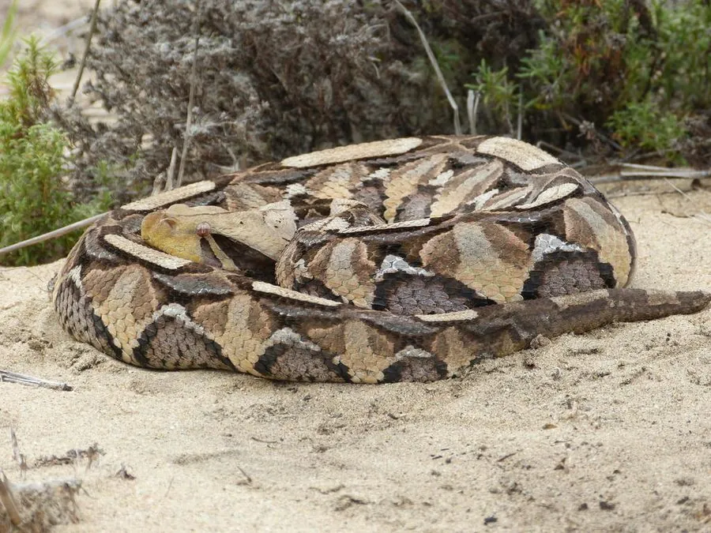

爬行动物 · 动物界
加蓬蝰蛇 Bitis gabonica

非洲雨林中的大型蝰蛇，体型粗壮、毒牙极长，身上有几何状花纹，善于伏击猎物，毒性很强需避免接触。
- 分类
- 门脊索动物门纲爬行纲目有鳞目科蝰科属咝蝰属
- 栖息环境
- 非洲中西部的热带雨林地面、落叶层与湿润灌丛
- 地理分布
- 非洲西部和中部的雨林地区
- 保护级别
- IUCN 无危（LC）；非中国原产，在中国无保护级别
物种志
加蓬蝰蛇体长 1.2–1.8 米，个别可达 2 米，身体极为粗壮，是非洲最重的蝰蛇之一，体重可达 8–12 千克。它头部宽大呈三角形，两只眼睛上方有角状突起，体色以紫褐、灰褐为底，布满三角形、菱形和条纹状的复杂几何花纹，在落叶层中具有极好的隐蔽效果；毒牙可长达 2 厘米以上。
它分布于非洲中西部的热带雨林和湿润草原，多在夜间伏击，行动缓慢，捕食鼠类、鸟类、蛙类和小型哺乳动物，捕猎时几乎一动不动地等待猎物靠近。它是卵胎生蛇类，妊娠约 7–8 个月后产下 20–40 条幼蛇。加蓬蝰蛇毒性较强，毒液可破坏血液和组织，被咬后须立即就医；它性情相对安静，遇到时保持距离、不要靠近或挑逗。
形态与习性
- 食性鼠类、鸟类、蛙类和小型哺乳动物
- 体长1.2–1.8 m
- 体重约 8–12 kg
- 寿命约 15–20 年
- 繁殖卵胎生，妊娠 7–8 个月，每胎 20–40 条
- 活动节律夜行性，多伏击捕猎
- 毒性毒性较强，被咬须立即就医
趣味知识
- 加蓬蝰蛇的毒牙可达 2 厘米以上，是毒蛇中最长的毒牙之一。
- 它身上的几何花纹与落叶层浑然一体，伏击时很难被发现。
- 加蓬蝰蛇体型粗壮，体重可达 12 千克，是非洲最重的蝰蛇之一。